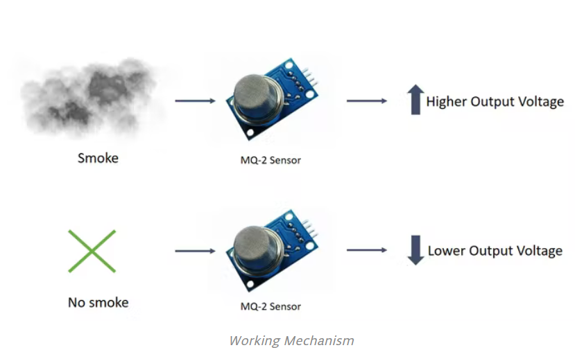

Arduino with PIR Motion Sensor
With this Project, you will learn how to connect PIR sensor with Arduino and program the Arduino to detect any moment in the room or around the motion sensor.

Smoke Detection using MQ-2 Gas Sensor
In this tutorial, we will learn how to detect Smoke and inflammable gases using an MQ-2 sensor.

Arduino Radar Project
The aim of this Arduino Radar project is to achieve a radar system prototype based on an Arduino board that detects stationary and moving